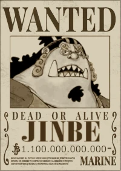

Quem é o timoneiro dos mugiwaras?
Cavaleiro do Mar" Jinbe é o timoneiro dos Piratas do Chapéu de Palha. Ele é o décimo membro da tripulação e o nono a se juntar, fazendo isso durante o Arco País de Wano.
Jinbe é um homem-peixe sendo um tubarão-baleia e um poderoso mestre do karatê Homem-Peixe. Seu sonho é realizar o desejo moribundo de seu ex-capitão Fisher Tiger de coexistência e igualdade entre humanos e homens-peixe.
Ele era um membro dos Piratas do Sol, eventualmente se tornando seu segundo capitão após a morte de seu capitão original, Tiger. Ele eventualmente se tornou um dos Shichibukai, embora tenha renunciado durante a Batalha de Marineford.
Antes e durante a guerra, Jinbe fez amizade com Monkey D. Luffy e dois anos depois aliou-se a ele e sua tripulação para evitar o golpe de estado dos Novos Piratas Homens-Peixe contra o Reino Ryugu da Família Real de Neptune. Luffy posteriormente o convidou para se juntar aos Piratas do Chapéu de Palha, mas Jinbei adiou até romper os laços com Big Mom durante o Arco Ilha Whole Cake. Depois de ficar para trás em Totto Land para proteger os Piratas do Sol da ira de Big Mom, Jinbe voltou para os Chapéus de Palha durante o Terceiro Ato do Arco País de Wano, anunciando oficialmente seu status como membro da tripulação.
Atualmente ele tem uma recompensa de 1.1 Bilhões de Berries
Poderes do nosso Timoneiro
Jinbe é um mestre do Karatê Homem-Peixe, revelado que ele já tinha uma faixa preta quando ele ainda era uma criança, que ele pode usar para bater fora os guardas de uma só vez. Sua habilidade é tal que seus ataques não precisam nem mesmo fazer contato físico com o inimigo como as partículas de água no ar vão levá-los longe depois de alguns segundos de tempo desde o início do ataque.
Ele também mostra a capacidade de manipular a água como se fosse um pano tangível através do Gyojin Karatê, mesmo usando-o para atacar à distância. Ele pode causar danos devastadores com esse tipo de técnica, tanto para as pessoas quanto para objetos (navios). Jinbe mais tarde revela que o Karatê Homem-Peixe lhe permite controlar toda a água dentro de suas proximidades, incluindo a água no corpo de uma pessoa. Jinbe demonstra essa habilidade espirrando água do mar nos zumbis de Moria, apesar de ele estar de pé sobre um campo de batalha coberto de gelo. E com essa habilidade, ele é capaz de prejudicar Luffy, apesar de ele ser de borracha.
O peixe falando com peixes
Entre os homens-peixes, Jinbe tem mostrado a capacidade única de se comunicar com os peixes, mesmo a longas distâncias. A capacidade de falar com os peixes normalmente é exclusivo para homens-peixe, assim Jinbe tem a capacidade de fazê-la é considerado digno por Crocodile.
Ele convocou uma grande cardume de tubarões-baleia para o Calm Belt (que normalmente era muito perigoso, com os Reis dos Mares infestando por lá) para ajudá-lo em uma massa de fuga de Impel Down. Ele pode dar aos tubarões-baleia ordens precisas, para que eles compreendam e obedeça-o.
Gostaria de conhecer os outros Mugiwaras?